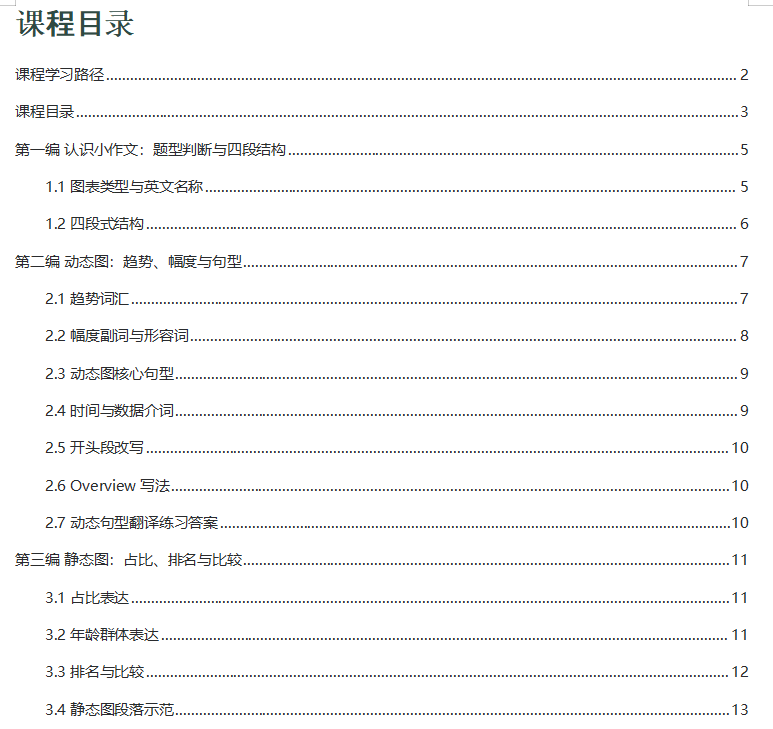
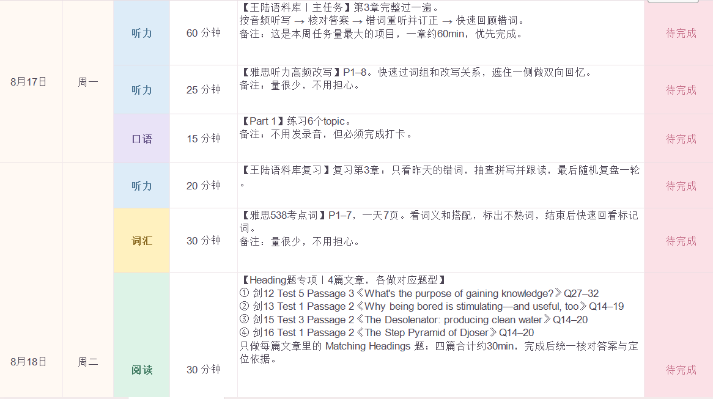

序写在前面
如果你高考英语并不优秀、四六级擦边过，是已工作多年没碰英语的成年人，还是想在高中就拿到雅思成绩的初中生——那你学雅思的第一步，都应该看这篇。从怎么制定学习计划，到听、阅、口、写四科的详细技巧，手把手教你怎么速通 8 分。
先介绍一下自己：我是 Sera，雅思 8.0，雅思工作室创始人，带过上百个同学顺利出分。我自己的英语几乎是自学起来的，小镇做题家，语言教育资源贫瘠，摸索了很久，也走了很多弯路。所以今天想把我用时间、血泪换来的经验，毫无保留地分享出来。
这篇文章的定位
不是「英语学习方法论」，而是一张可以直接执行的备考施工图：目标怎么定、分数怎么配、资料怎么分类、每天做什么、做到什么程度算完成。看完你应该能立刻写出自己的第一周计划。
01怎么定目标
1.1最值得抄的分数配置表
你的目标分数定得有多好，你出分就有多快。
很多人不理解，为什么「定目标」这么重要。有人说：我想拿 7 分，那四科都考 7 分不就行了？我想拿 6.5，四科都 6.5 不就行了？有什么好讲究的？
那么现在我告诉你：你所制定的目标，将直接影响你出分的快慢，以及达到目标要费多大劲。好目标，让你一两个月即可轻松出分；坏目标，达到同样的分数可能要耗你 4 个月甚至更久。
| 目标总分 | 适用情况 | 听力 | 阅读 | 写作 | 口语 | 备注 |
|---|---|---|---|---|---|---|
| 6.0 | 常规配置 | 6.5 | 6.5 | 5.0 | 5.0 | — |
| 6.0 | 卡单科小分 6 | 6.0 | 6.0 | 6.0 | 6.0 | 四科必须全部 ≥ 6 |
| 6.5 | 常规配置 | 7.0 | 7.0 | 5.5 | 5.0 | — |
| 6.5 | 卡单科小分 6 | 6.5 | 6.5 | 6.0 | 6.0 | 四科必须全部 ≥ 6 |
| 7.0 | 常规配置 | 7.5 | 7.5 | 6.0 | 5.5 | — |
| 7.0 | 卡单科小分 6 | 7.0 / 7.5 | 7.5 / 7.0 | 6.0 | 6.0 | 听阅双科总分 = 14.5 |
| 7.0 | 卡单科小分 6.5 | 7.0 | 7.0 | 6.5 | 6.5 | 四科必须全部 ≥ 6.5 |
| 7.5 | 常规配置 | 8.0 | 8.0 | 6.5 | 6.0 | — |
| 7.5 | 卡单科小分 6.5 | 8.0 / 7.5 | 7.5 / 8.0 | 6.5 | 6.5 | 听阅双科总分 = 15.5 |
注：上表为性价比配置示例，实际备考仍需结合目标院校 / 项目的单科要求。
把这张表翻译成四张卡片，方便保存和对照：
1.2为什么这样配单科分数
原因一：用最小的门槛分数，撬动最大的杠杆
雅思总分是按四科平均分四舍五入得来的：四科总和在 23–24.5 → 总分 6.0，25–26.5 → 6.5，27–28.5 → 7.0，29–30.5 → 7.5，以此类推。
所以，你只需要达到最小的那个门槛——23、25、27、29——即可擦边拿到理想的 6.0 / 6.5 / 7.0 / 7.5。分数嘛，够用就行，多一分都是浪费。
原因二：听阅目标永远比口写高 0.5–1.5 分
中国考生普遍听阅强、口写弱。如果你的高考英语在 120 分以上、四六级擦边过，听阅大概在 5.5–6.5，但口写可能只有 5–5.5。所以推荐配置都是明显把分数压在听阅上，这样能显著减轻学习压力。
按这个思路走，会得到什么？
- 想拿 6.0：有手就行，不用额外努力；
- 想拿 6.5：基本可以不管听阅，集中练口写；
- 想拿 7.0 及以上：需要全科冲刺。
原因三：什么是「小分」，为什么会「卡小分」
小分就是对四科各科分数的要求，多见于留学项目、移民政策、部分出差签证要求中。卡小分 6，即四科里每一门都必须 ≥ 6；卡 6.5，即每一门都必须 ≥ 6.5。具体要求请认真对照梦校或项目的官方说明，以减少重复考试的可能。
原因四：最后一定要按个人情况微调
有的人听阅差、口写好，那就把听阅目标调低、口写调高。有的人什么都不擅长，那就按这套配置走。具体多少，最终还是要结合自身情况来改——毕竟没有人比你自己更了解自己。
02怎么定计划
定好目标，接下来才是计划。制定任何计划——总计划、月计划、日计划——首先要理清三件事：备考时间多久？用什么资料？然后才是每天的具体安排。
2.1备考周期：单次不要超过三个月
我不建议任何人的单次备考周期超过三个月。
所有人都应该清醒：雅思不是像高考那样需要三年高强度续航的学科，雅思是一个速成考试。「夫战，勇气也。一鼓作气，再而衰，三而竭。」备考超过三个月，别管学得怎么样、能不能达到目标分，都先去考试。三个月听着不长，但对绝大部分人来说已经接近坚持的极限。
更重要的是，你需要一场真实考试来查缺补漏、及时调整方向。很多学生考完才来找我说：老师，我考完才发现自己学的在考试里根本用不上——口语平时练习没注意时间把控；写作没限时，考场根本写不完；听力一次都没从头到尾听完一整套，考场根本反应不过来……
你以为考场所需的必备素质你都练到了，其实是错开的。努力了几个月、以为方向全对、卯足了劲往前闯，结果差得远。所以最多到三个月，必须去考一次，就是为了校正方向、发现偏差。
但 2000 块一次的「查缺补漏」太贵了
如果你预算充足，直接报名正式考试当然最好。如果想在考前获得接近真实的流程和环境，可以先用全真模拟系统练手：1V1 对标剑雅机考流程，并给出详细的模拟报告，把「第一次上考场」的意外成本降下来。（原文此处为作者工作室的模拟服务推广，本页保留其位置，不代为背书。）
2.2资料的选择：先分类，再安排
在制定计划之前，先把手里的资料理清楚：雅思资料到底分成哪几类，每一类用来做什么？你得先知道自己有哪些东西要学，后面才能安排每天看哪节课、练哪些题、完成多少任务。
选资料的三条判断标准
- 适配基础：只适合英语基础好的资料，对新手就是劝退；
- 适配周期：有的适合长线慢学，有的只管速成但天花板只到 6.5；
- 可执行：每份资料都要能对应到「今天做什么、做到什么程度」。
市面上很多听起来很厉害的理论——各种「三棱镜」「八爪鱼」「线索串题法」——大多是新瓶装旧酒：概念包装得很高级，拆开看就是常识。别被标题唬住，判断标准只有一个：它能不能让你的某一天任务变得更具体。
03听力：三类资料，三种任务
| 资料类别 | 具体包含什么 | 对应的学习任务 |
|---|---|---|
| ① 听力语料库 | 常见场景词汇、词汇的发音与拼写、数字及日期等信息辨识 | 听写新词、订正拼写、复习错词、听音辨义 |
| ② 听力技巧课 | 各题型做题方法、读题与预测、定位答案、识别同义替换、利用读题时间、识别干扰信息，以及漏听后的处理方法 | 学习一节技巧课，完成对应题型练习 |
| ③ 真题练习与错题复盘资料 | 真题及音频、听力原文、答案解析、错题记录与复习方法 | 限时做题、分析错因、重听错题片段、整理替换表达、隔天复测 |
3.1语料库要练到什么程度
制定听力计划前，先弄清楚语料库要练到什么程度。听力词汇需要达到三个层次的要求：
- 听到——有些人连听都听不到，录音放完了才说「嗯？没听到啊」；
- 听到并知道是哪个词，但瞬时只反应出拼写——比如听到 priority，第一反应是它的拼写，而不是「优先权、优先级」；
- 听到并知道是哪个词，但瞬时只反应出意思——知道 priority 是优先权，却忘了怎么正确拼写。
所以练语料库的核心，是把声音、含义、拼写三者建立联系，减少「这个词我明明认识，考试时却没听出来或者没写对」的失分。
具体安排要看基础：听音辨词和拼写薄弱，就多安排听写和复习；已经熟练，就重点复习自己的错词，不一定每个人都要完整刷完某一本语料库。
3.2技巧课要学什么
听力技巧课解决的是：怎么读题、怎么预测、怎么抓答案、怎么分配注意力，以及遇到干扰信息和漏听时怎么处理。这里要明确一个目标：不必逐字听懂全文，也要学会抓住答题所需的信息。
学完一节技巧课，就安排对应的题型练习，检查自己能不能真正用起来。
3.3复盘：把错因分清楚
做完题以后一定要留出复盘时间，把错因分类：
- 不认识这个词；
- 认识但没听出来（辨音问题）；
- 拼写错误；
- 漏听 / 跟丢位置；
- 误解题意；
- 被干扰信息误导。
然后根据错因调整后面的任务：拼写有问题，就把错词加入后续听写；认识但没听出来，就重听对应片段、结合原文辨音；被干扰信息误导，就回到录音里找出信息发生变化的位置。
错因不是用来「记录」的，是用来「改下一天任务」的。只统计不改计划，等于白复盘。
04阅读：技巧课 + 真题复盘
| 资料类别 | 具体包含什么 | 对应的学习任务 |
|---|---|---|
| ① 阅读技巧课 | 各题型做题步骤、定位方法、同义替换、句子理解、时间分配、常见误区与复盘方法 | 学习一节技巧课，整理做题步骤 |
| ② 真题练习与复盘资料 | 阅读真题、答案解析、原文中的答案依据、错题及词汇记录 | 完成题型专项或限时阅读，找出答案依据，分析错因 |
阅读需要学的课程主要就是技巧课，之后通过刷题把方法用起来。制定计划时，要把「看课」和「刷题复盘」分开安排。
- 看完一节课，做对应练习，确认自己能不能独立运用；
- 做完题，回到原文找到答案依据，弄清楚题目和原文是怎么对应的；
- 问自己：我为什么做错？是定位错、同义替换没认出来，还是句子没读懂？
刚开始可以按技巧课进度安排题型专项，熟悉方法以后，再逐步加入限时阅读和整套练习。
阅读复盘的最小闭环
每道错题写下三行：题目定位词 → 原文对应句 → 同义替换关系。三行写不出来，说明这道题不是「粗心」，而是方法没掌握。
05口语：按 Part 1 / 2 / 3 整理
| 资料类别 | 具体包含什么 | 对应的学习任务 |
|---|---|---|
| ① Part 1 高频基础话题资料 | 大家常说的「固定题」：家乡、住宅、学习或工作等；对应的常见问法、个人信息表达和回答展开方法 | 准备个性化内容，练习同一话题的不同问法 |
| ② Part 1 当季话题与答题技巧 | 当季整理题库中的新题及保留题；直接回答、补充原因、举例、描述细节等方法 | 练习若干问题，录音后修改并重答 |
| ③ Part 2 素材组织与串题技巧 | 人物、地点、物品、事件等素材；审题、准备笔记、组织叙述、展开细节，以及素材在不同题目间的调整 | 准备一个素材，完成一次计时回答，再适配相关题目 |
| ④ Part 3 思路拓展与语言衔接 | 观点展开、原因分析、举例、比较、影响、解决办法；常用讨论角度、衔接表达、自然的思考缓冲语 | 练习若干问题，用不同角度展开，复盘停顿与逻辑 |
5.1Part 1：先把「关于自己」的内容备好
先准备家乡、住宅、学习或工作这些高频基础话题，把跟自己有关的内容整理好，再练习不同问法下怎么回答。当季的其他话题，要学能迁移的答题方法：补充原因、举例、描述变化和细节。
安排任务时写具体：今天准备哪个话题、练几个问题、录几段回答、哪些回答需要修改后重说一遍。
5.2Part 2：素材组织与串题
要练的是素材组织和串题：准备时间里记什么、开口以后怎么展开、素材换到另一道题里该怎么调整，确保回答贴合题目。
所以计划里除了「准备素材」，还要安排计时开口练习，以及根据不同题目调整素材的练习——检查自己能不能把准备好的内容完整讲出来，而不是背完就断。
5.3Part 3：思路角度 + 衔接语言
要积累可以迁移的思考角度和回答结构：从个人、他人、社会、经济、环境等角度分析问题；同时练习衔接表达和 fillers（自然的思考缓冲语）。
这些表达能帮你争取短暂的思考时间，让回答衔接得更自然；「万能思路」则帮你在遇到陌生问题时找到切入点，但最后仍然要回应具体问题。
任务可以拆成：学一种展开方法 → 练几个对应问题 → 听录音检查停顿、逻辑和表达。
06写作：小作文七类 + 大作文技巧与素材
| 资料类别 | 具体包含什么 | 对应的学习任务 |
|---|---|---|
| ① 小作文题型技巧资料 | 按七类整理：折线图、柱状图、饼图、表格、地图、流程图、混合图；学习各类题目的审题、概述、分组和具体描述方法 | 学习一种题型，练习概述或主体段，再完成整篇写作与修改 |
| ② 大作文写作技巧课 | 审题、识别题目要求、确定立场、不同题型的篇章结构、主体段论证和常见问题 | 完成审题练习、列提纲、写主体段或整篇作文 |
| ③ 大作文主题素材课 | 按教育、科技、环境、工作、健康、社会等主题整理观点、理由、例子和表达 | 学习一个主题，将素材用于具体题目的提纲或段落 |
6.1小作文：按七类逐个攻破
小作文按七类整理：折线图、柱状图、饼图、表格、地图、流程图、混合图。每一类都要掌握：怎么看图、怎么找主要特征、怎么写概述（Overview）、主体段怎么分组和描述。
任务安排可以是：先学一种题型 → 练概述或主体段 → 完成整篇写作 → 根据反馈修改。

6.2大作文：技巧和素材分开安排
技巧课要学的是：拿到一道题怎么审题、怎么确定立场、怎么搭结构、怎么把一个观点论证清楚。
素材课按主题积累：教育、科技、环境、工作、健康、社会等，让你面对不同话题时有观点、有理由、也有合适的表达。
学完技巧，安排审题、列提纲或段落练习；学完一个主题的素材，尝试把它用到具体题目里。整篇写作之后，也要留出修改和重写的时间。
写作提分的真正来源
不是「多写」，而是「写 → 得到针对性的反馈 → 改 → 重写同一篇」。同一道题改三遍，比分头写三道新题有效得多。
07把资料拆成每天的任务

7.1一个好的日任务长什么样
比如「今天学听力」，可以进一步拆成：听写一组语料库并订正错词 ＋ 学习一节选择题技巧课 ＋ 完成一组配套题并分析错因。
而不是写成「今天练听力 1 小时」——这种任务既不知道做没做，也不知道做到什么程度。
7.2安排的三个变量
每天不用把所有模块都安排一遍，但每一项任务都要足够具体：今天完成什么、完成到什么程度、做完以后要复习和修改什么。
7.3一个 8 周节奏的参考骨架
- 第 1–2 周｜筑基
语料库听写起步、听力/阅读技巧课各过一轮基础题型；口语 Part 1 高频话题逐个准备；小作文先学题型判断与四段结构。 - 第 3–4 周｜专项
听阅按题型做专项，每个题型「学一节 → 练一组 → 复盘错因」；口语 Part 2 积累 8–10 个可迁移素材；大作文技巧课 + 每周 1 篇限时。 - 第 5–6 周｜整合
开始整套限时练习（听力一次听完一整套、阅读 60 分钟三篇）；口语每周 2 次全流程录音；写作每周 1 小 1 大并重写。 - 第 7–8 周｜模考与修正
每周 1–2 次全真模拟，按真实时间与流程；只改「模考暴露出来的问题」，不再开新资料；考前一周降低强度、稳住状态。
08避坑清单
把原文里散落的提醒集中成一份清单，备考中随时对照：
最常踩的 8 个坑
- 把四科目标定成一样。四科都 7 分的代价远高于「听力 7.5 + 阅读 7.5 + 写作 6 + 口语 5.5」。
- 备考拖过三个月。没有真实考试校准方向，努力可能全部打偏。
- 只统计错题，不改下一天任务。复盘的价值在于调整计划。
- 语料库追求「刷完」。目标是声音—含义—拼写建立联系，不是翻完一本书。
- 技巧课看完不练。看完不等于会用，必须配对应题型练习。
- 口语只准备素材、不开口计时。考场卡的是时间控制和展开能力。
- 写作只写不改。没有反馈和重写，错误会稳定复现。
- 考前还在开新资料。最后两周只解决已暴露的问题。
下一篇：进阶篇
以上就是《2 个月速成 8 分雅思 · 万字手搓全流程学习 + 避坑指南》的第一篇《筑基篇》。第二篇《进阶篇》会继续层层拆分，手把手讲听、阅、口、写四科的全流程学习方法。
关注作者 @Seramikimiki →